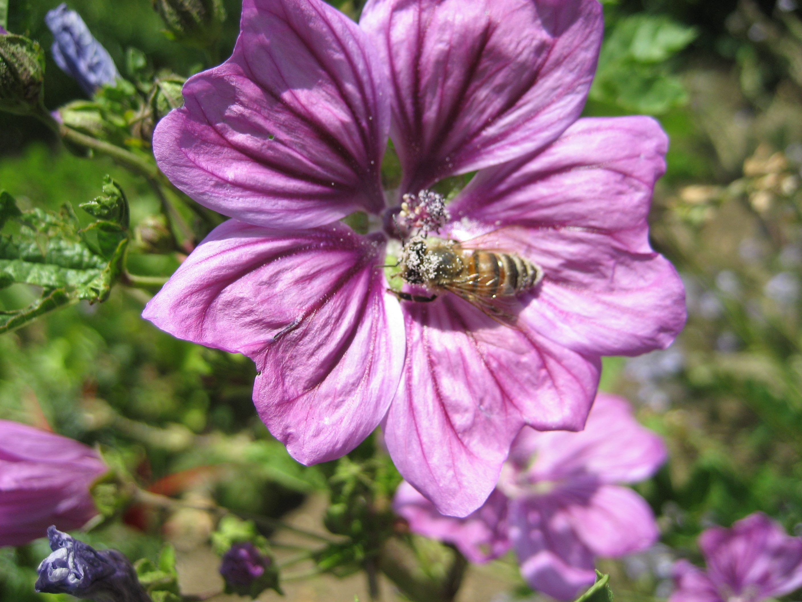
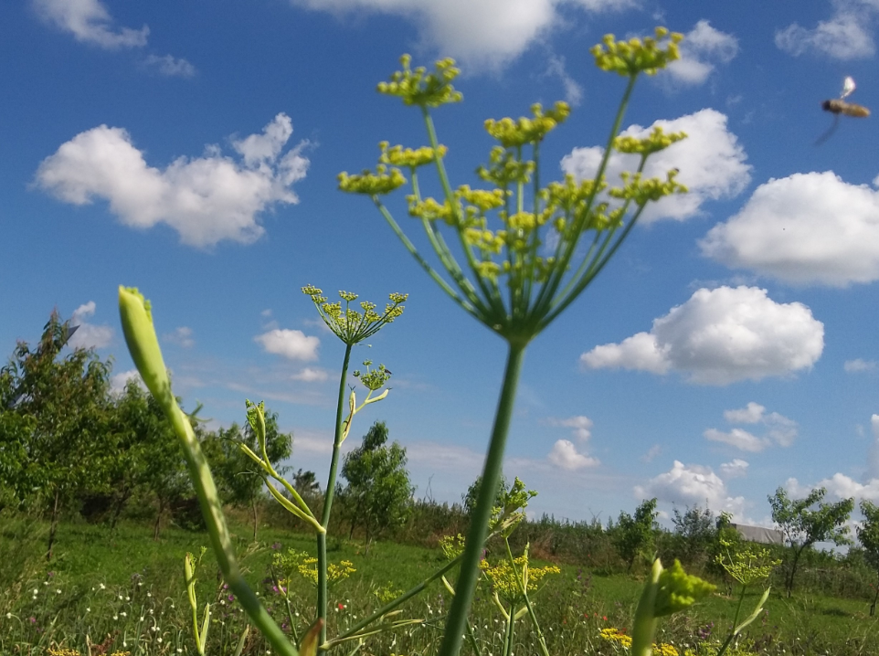
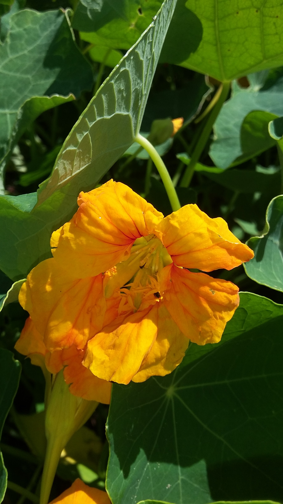
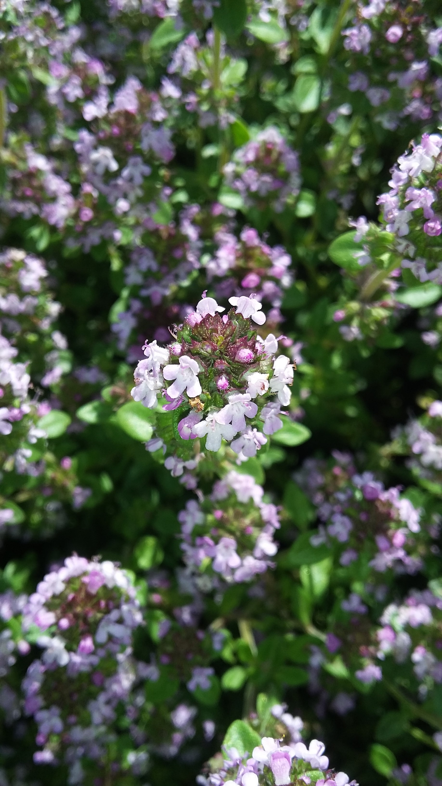
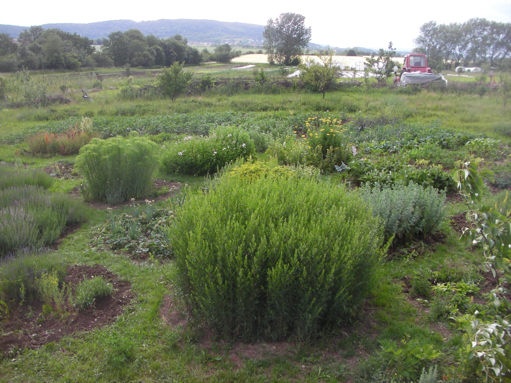
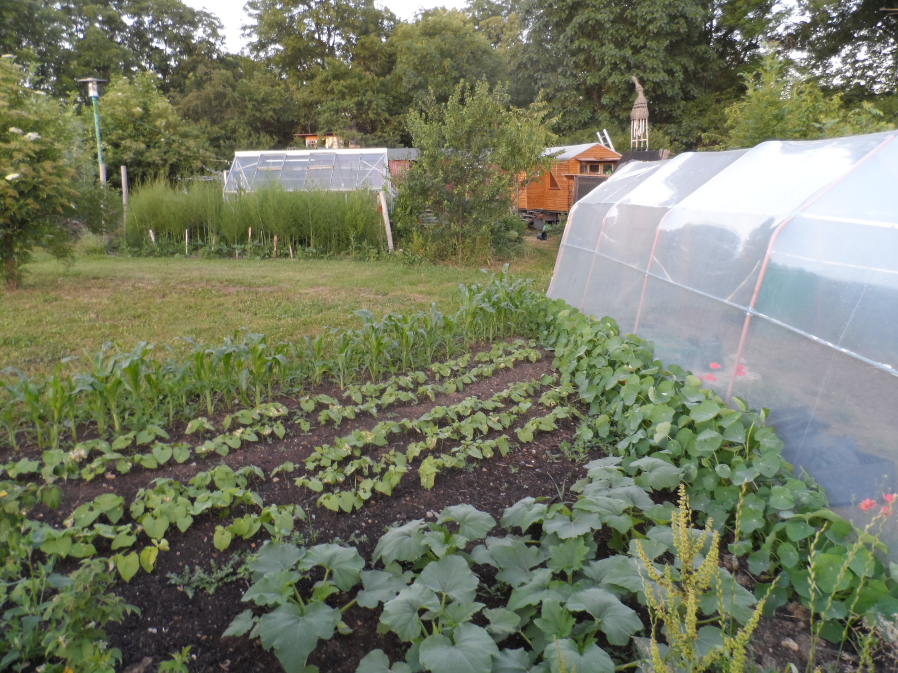

Herzlich Willkommen!!!
Sie sind auf der Internetseite der Kräuterinsel Cobstädt gestrandet.
Wir sind ein junger Gärtnereibetrieb, welcher im April 2017 seine Pforten für Sie geöffnet hat.
In unserem breiten Topfpflanzensortiment ist für jeden Geschmack etwas dabei:
Essbare Blüten, Wildkräuter, Stauden-, Gemüse- und Obstraritäten, Arznei-, Färber- und Zauberpflanzen, Kräuter für die regionale,
mediterrane oder auch weltweite Küche.

Transportieren Sie mit uns ein Stück Urlaub in Ihren Alltag und genießen Sie unseren Schaugarten und das einladende Ambiente der Gärtnerei im schönen Cobstädt.
Erleben Sie hier die Pflanzenwelt mit all Ihren Sinnen: RIECHEN, SCHMECKEN, ERLEBEN und GENIEßEN Sie unsere große Pflanzenvielfalt!!!
Wir wollen Ihnen natürlich auch den Wunsch nach gesunden, naturnah produzierten Pflanzen erfüllen und versuchen daher nach Eu-Ökorichtlinien zu
arbeiten, auch wenn wir momentan noch kein Bio zertifizierter Betrieb sind. Dies wird sich aber im Laufe der Zeit ändern.

So setzen wir auf torffreies Topfsubstrat, organische Dünger und natürlichen Pflanzenschutz.
Wir produzieren unsere Pflanzen nachvollziehbar und ressoursenschonend vor Ort in Cobstädt
und lassen ihnen dabei möglichst viel Raum und Zeit, um unter natürlichen Bedingungen kraftvoll heranzuwachsen.
Ohne chemische Pflanzenschutzmittel, künstlichen Düngern oder in enormen Massen zugefügter Wärmeenergie
sind unsere Pflanzen schlicht weg gesünder, abgehärteter und nachhaltiger produziert als hochgetriebene Massenware und das werden Sie spühren.

Wir begleiten unsere Pflanzen also vom kleinen Sämling oder Steckling bis hin zu dem Punkt, an welchem wir ihnen verhelfen in die Welt zu gehen.
Hierbei wollen wir Ihnen die kulinarischen, medizinischen oder kulturhistorischen Geschichten erzählen und Ihnen Anwendungs- und Pflegehinweise mit auf den Weg geben,
damit Sie auch viel Freude mit Ihren erworbenen Pflanzen haben werden.
Unsere Pflanzen sollen für Sie keine isolierten Produkte darstellen
und unsere Arbeit ist somit vielmehr als eine Dienstleistung an die Pflanzenvielfalt zu verstehen.
Wir freuen uns auch Ihnen eine Reihe Veranstaltungen anbieten zu können.
Hierfür haben wir uns Partner mit ins Boot geholt,
welche in Zukunft das Angebote der Kräuterinsel Cobstädt mit Ihren spannenden Führungen und Seminaren bereichern werden.

Wer gute Qualität, Beratung und Handarbeit zu schätzen weiß, wird sich bei uns wohl fühlen.
Bei einem Besuch der Gärtnerei sollten Sie aber bitte der Witterung entsprechend gekleidet sein,
da wir nein zu betonierten Flächen und ja zu einem lebenden Boden sagen.
Kommen Sie also zu uns nach Cobstädt, verbinden Sie Ihren Besuch mit einem Spaziergang über das Gelände des Lebensgut Cobstädt e.V.,
auf welchem allerhand in Vergessenheit geratene Obstsorten angepflanzt sind.
Hier gibt es auch Selbsterntebeete zu bearbeiten, Windkunstwerke zu bestaunen und vieles mehr zu entdecken.
Des weiteren können Sie in Cobstädt auch Dienstags und Freitags zwischen 15 und 18 Uhr den Hofverkauf der Bioland-Gärtnerei Grünschnabel besuchen
und dort frisches, regional erzeugtes Gemüse sowie Gemüsejungpflanzen erwerben.
Ein Ausflug nach Cobstädt lohnt sich also in vielerlei Hinsicht.
Wir freuen uns auf Ihren Besuch!!!
